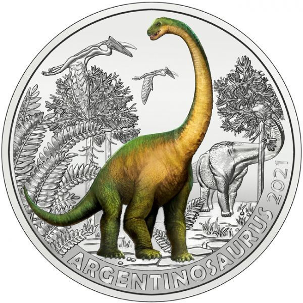
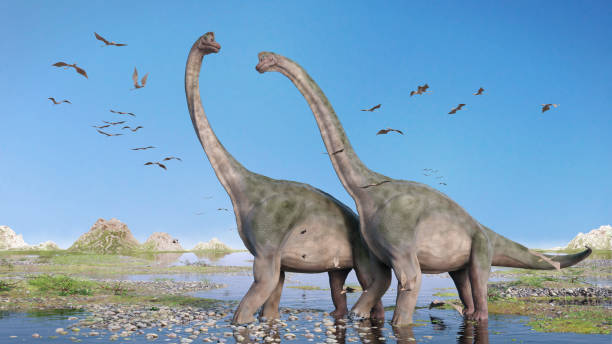
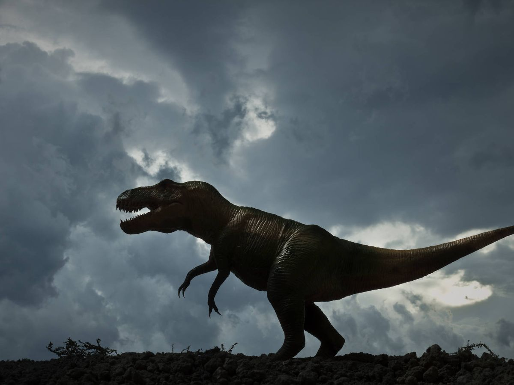

Dinosaurios más grandes que han existido nunca
- Argentinosaurus
- Este saurópodo es considerado uno de los dinosaurios más grandes jamás descubiertos. Vivió en lo que hoy es Argentina y se alimentaba de plantas.Longitud: 40 metros
Peso: Hasta 100 toneladas

Brachiosaurus
- Eran herbívoros de gran tamaño que se distribuyeron por América del Sur y otras regiones del mundo.Longitud: Varía entre 25 y 40 metros
Peso: Hasta 100 toneladas

T-Rex
- El T-Rex A pesar de no ser el más grande en términos de longitud, su enorme cabeza y poderosas mandíbulas lo convertían en el depredador dominante en su ecosistema.Longitud: 12 metros
Peso: 8 toneladas
